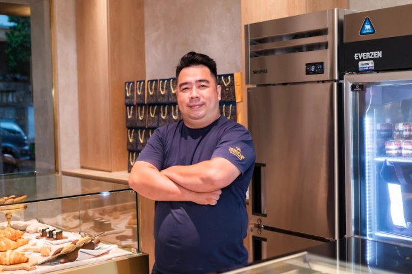
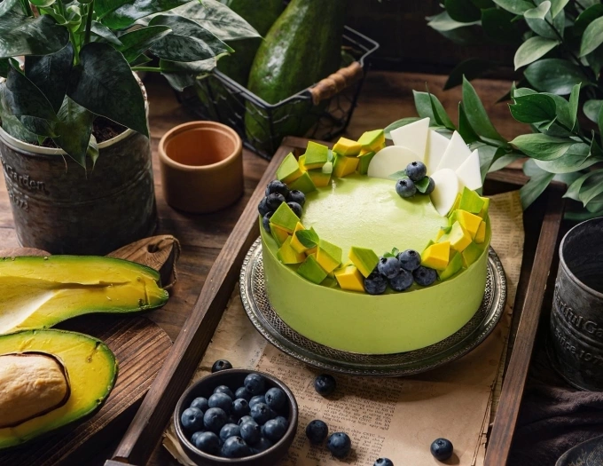

Velvet Tier không chỉ nổi bật với bánh mousse mà còn gây ấn tượng nhờ chính sách cho khách dùng thử bánh trước khi mua. Đây là chiến lược giúp thương hiệu nâng cao trải nghiệm khách hàng và tăng độ tin cậy.
Velvet Tier là gì?
Velvet Tier Dessert & More là thương hiệu bánh mousse tại TP.HCM, tập trung vào chất lượng sản phẩm và trải nghiệm khách hàng. Sau nhiều năm phát triển, thương hiệu đã mở rộng từ online sang cửa hàng thực tế.
Định hướng phát triển
- Lấy trải nghiệm khách hàng làm trung tâm
- Phát triển sản phẩm theo mùa
- Tập trung chất lượng thay vì số lượng
Chiến lược cho khách dùng thử bánh
Chính sách cho khách dùng thử giúp Velvet Tier tạo niềm tin trước khi mua. Đây là điểm khác biệt so với nhiều thương hiệu bánh khác.
Lợi ích của chiến lược này
- Tăng tỷ lệ mua hàng
- Giảm rủi ro cho khách
- Tạo trải nghiệm thực tế

Nguyên liệu trái cây tươi tạo nên chất lượng
Velvet Tier sử dụng trái cây tươi Việt Nam, được tuyển chọn trực tiếp từ nông trại để đảm bảo chất lượng bánh mousse luôn ổn định.
Lợi thế cạnh tranh
- Nguyên liệu tươi
- Nguồn cung ổn định
- Hiểu rõ mùa vụ

Bánh mousse ít ngọt – xu hướng hiện đại
Velvet Tier phát triển các dòng bánh mousse ít ngọt, phù hợp với khẩu vị hiện đại và tốt cho sức khỏe hơn.
Sản phẩm nổi bật
- Mousse dưa lưới
- Mousse bơ
- Mousse sầu riêng
Câu hỏi thường gặp
Velvet Tier có cho dùng thử bánh không?
Có, khách hàng có thể dùng thử trước khi quyết định mua.
Bánh mousse Velvet Tier có ngọt không?
Bánh được thiết kế ít ngọt, phù hợp với xu hướng hiện đại.
Kết luận
Chiến lược dùng thử bánh, nguyên liệu tươi và định hướng sản phẩm ít ngọt giúp Velvet Tier xây dựng thương hiệu bền vững và tạo dấu ấn trên thị trường.